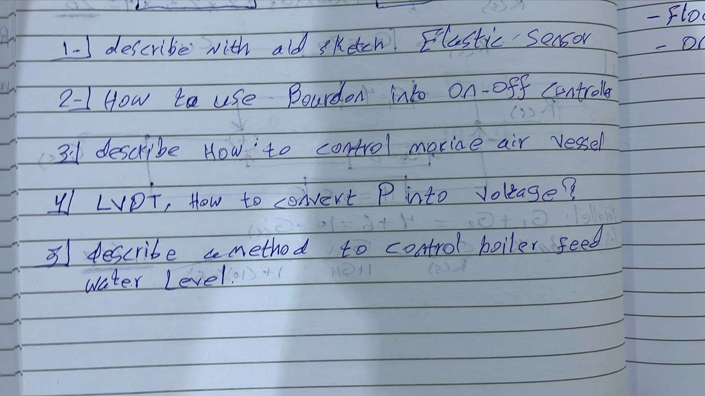
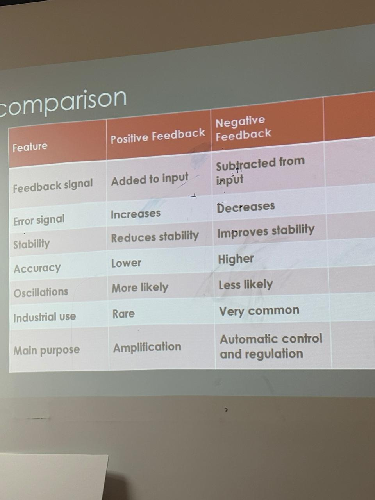
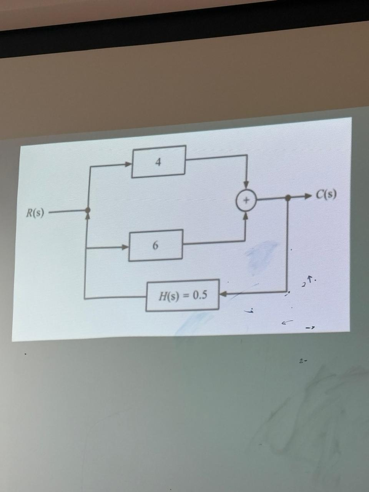
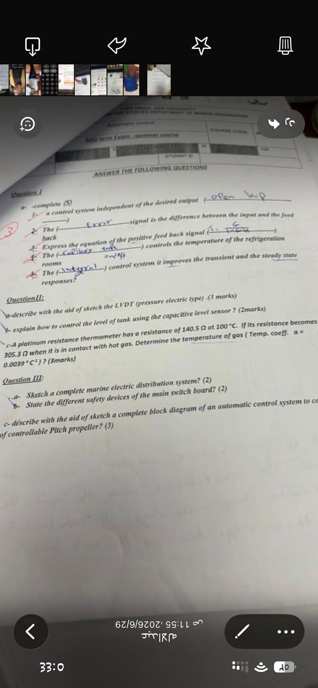

أسئلة الورقة
الأسئلة المقالية والرسم: elastic sensor, Bourdon, LVDT, marine air vessel, boiler feed water.
بطاقة واحدة في كل مرة. بعد ما تفهمها انتقل للتدريب.
ابدأ باختبار قصير، ثم زد العدد عندما تكون جاهزًا.

الأسئلة المقالية والرسم: elastic sensor, Bourdon, LVDT, marine air vessel, boiler feed water.

استخدمت للمقارنة بين الاستقرار والدقة والاهتزازات والاستخدام الصناعي.

استخدمت منه أمثلة الجمع والتوازي والـ feedback مع H(s).

تتضمن fill-in، LVDT، capacitive level، RTD، main switchboard وcontrollable-pitch propeller.